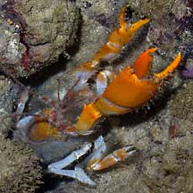
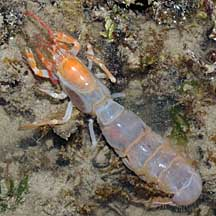
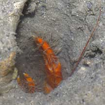
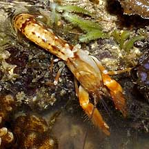
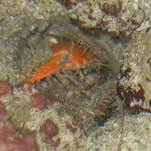
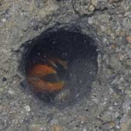
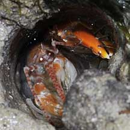
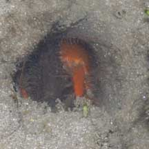

|
|
| lobsters text index | photo index |
| Phylum Arthropoda > Subphylum Crustacea > Class Malacostraca > Order Decapoda > Lobsters |
| Coral
ghost shrimp Corallianassa sp. Family Callianassidae updated Oct 2019 Where seen? The smooth burrow of this large, brightly coloured animal is sometimes seen among rubble near living reefs on our Southern shores. But animal itself is seldom seen out in the open. Often, all you might glimpse is just the tip of a bright orange claw in the distinctive burrow. At night, however, you may spot one near the burrow entrance as it does some housekeeping, or even wandering about outside. Features: 4-6cm long. Long abdomen with broad tail, a pair of larger pincers, usually one much larger than the other. Pincers usually bright orange, smaller appendages and antennae banded orange. Body translucent, white or yellowish. It digs long, smooth sided burrows in solid coral rubble. The burrows are said to be complex. The burrow looks like a PVC pipe! Thanks to Dominik Kneer who shared that they achieve this by gluing sand grains together, their legs give off a sticky mucus. He also shared that a similar looking animal, Axiopsis (see photo below), cannot do that, instead they build something like a brick wall by picking up larger pieces and vibrating them in place to keep the burrow walls together. Coral ghost shrimp food: Most ghost shrimps species eat detritus and bacteria or on decaying seagrass and seaweeds. Human uses: In Australia, some species are caught by fishermen and used as bait. |
 Sentosa, May 04 |
 Digging out the burrow? Sentosa, May 04 |
 Pulau Hantu, Jun 08 |
|
 Burrow is smooth and looks like a PVC pipe by gluing sand grains. Pulau Hantu, Aug 03 |
 This is Axiopsis serratifrons Builds burrows like a brick wall. Sister Island, Jul 04 |
| Coral ghost shrimps on Singapore shores |
On wildsingapore
flickr
|
| Other sightings on Singapore shores |
 Sentosa Tg Rimau, Jan 26 Photo shared by Rui Quan Oh on facebook. |
 Pulau Sudong, Dec 09 |
 Pulau Pawai, Dec 09 |
 Pulau Salu, Aug 10 |
|
Acknowledgements
|